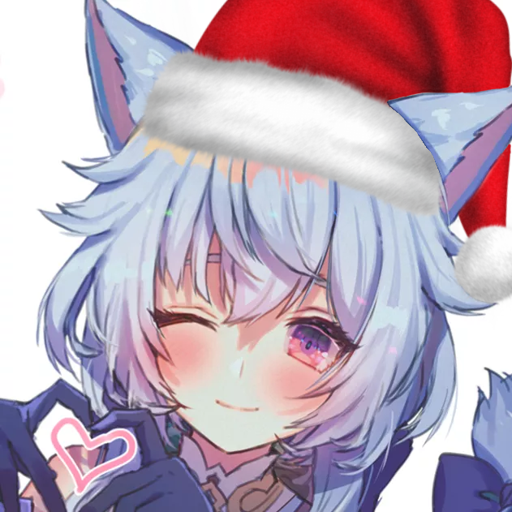

우리는 베트남을 기반으로 둔 테트리스 토너먼트 호스팅 조직 입니다. 지금까지 3번의 국내 토너먼트를 개최하여 열린 혜성이 국제 무대에 처음
등장했습니다. 퀄리티는 우리에게는 모든것을 뜻하며, 열린 혜성을 시청하거나 플레이하는 즐거운 시간을 갖기를 바랍니다. 비판 또는 감상은디스코드 참조하세요. 질문에 관해서는질의응답을 미리
확인해주시면 정말 감사하겠습니다.
Kamoto - 제작 감독, 품질 관리, 주요 의견 리더, 호스트
쓰레기통에서 발견한 만능 재벌

DavidScann - 수석 디자이너, 품질 관리, OBS 전문가
Beyond The stars 및 Tetr.io 아마추어 위클리의 자산도 만든 매우 유망한 신인 GFX 디자이너입니다.
Kuroni - 프로그래머
해외에서는 잘 알려져있지 않지만, 그는 CodeForce 에 대한 "국제 그랜드마스터" 타이틀과 현재 페이스북의 인턴으로 일하고 있는 국내 슈퍼스타
입니다.
Lightningreed - 웹 디자이너
귀하가 지금 접속중인 웹사이트를 구현하고, 아이디어를 PR프로세스의 매우 중요한 부분으로 변환합니다.
Neyako - 수석 프로듀서
osu! 에서 유명한 매우 재능있는 디자이너이고, 우리는 Neyako가 우리를 위해서 와준 것에 대해 아무리 감사를 표해도 부족합니다.
그의 Behance에서 그의 포트폴리오를 확인하고 필요한 모든 것을 그에게 자유롭게 의뢰하십시오.
Avilia - 인플루언서
Renge, Jed 및 더 작은 규모로, CZ, Smolfeesh 및 기타 많은 직원을 영입하여 대다수의 외국 직원에게 연락하는 일을 담당합니다.
Renge - 펀드 매니저, 조언자
모두가 이미 알고 있지만 그는 토너먼트와 뛰어난 품질로 유명한 조직인 TeamTSD 출신입니다. 그는 모든 단계에서 우리를 인도했고 우리는 그것에 대해
아무리 감사해도 모자랍니다.
Jed – 조언자
Renge와 함께 Jed도 많은 도움을 주었습니다. 그의 비판은 우리의 일부를 완전히 새로운 수준의 품질로 끌어올렸습니다. 이 전설에게 많은 존경심을
품습니다.
TwoQuantumBits — 매니저
그는 이 토너먼트에 많은 도움 및 규칙 재정을 도왔습니다. 관리에 대해서는, 매우 뛰어난 재능을 가지고 있습니다. 그가 우리에게 말해줄 때면, 엄청난 향상
외의 다른 것은 생각할 수 없습니다. Comet Open 기간 동안, 그의 활약을 기대해주세요.
특별히 감사한 분들:
- OBS 내에서 사용에 특화된 Sheetbot 버전에 대한 Kerrmunism
- ItsTheFire, Taamee 및 Poodle을 포함하되 이에 국한되지 않는 캐스터 팀.
- Max, Desiscatrc, Namie 및 DanielVNTM을 포함하되 이에 국한되지 않는 관리자 팀.
- 번역을 위해 힘써준 Suicord, qn, Kuroni, Ling1211 및 DeepL의 Choko.
- Onda Aka, Ciel, Desiscatrc 및 Noire는 작업 세션 동안 코믹한 구호를 제공했습니다.